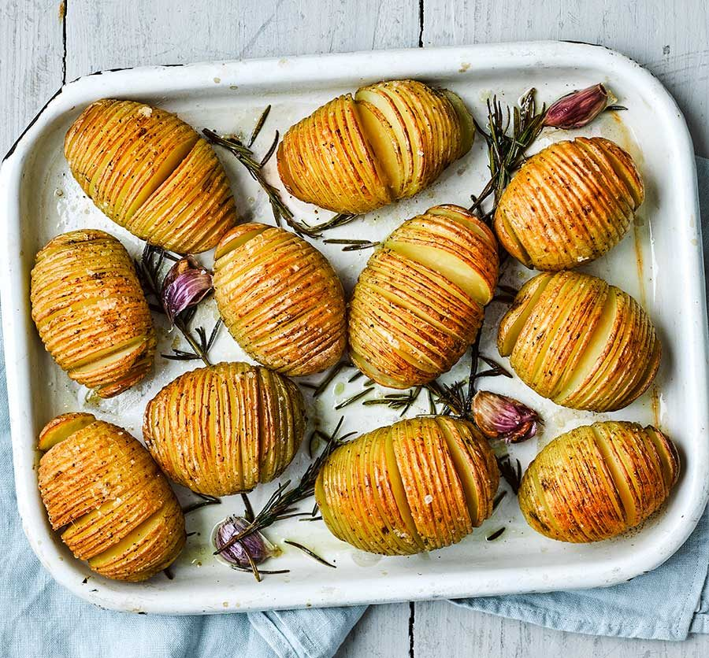

Hasselback potatoes

Description
Try something new with your Sunday roast this weekend with these garlic and rosemary hasselback potatoes. Using same-sized potatoes will help them cook evenly.
Ingredients
- 1.5kg medium sized potatoes
- 4 tbsp vegetable oil
- 4 garlic cloves
- a few sprigs of rosemary
- sea salt flakes
Method
- Heat the oven to 200C/180C fan/gas 6. Use a metal skewer and insert through the back of one of the flatter sides of the potato. It should go through most of the potato. Place on a chopping board, skewer-side down, and slice through the potato (be careful not to cut all the way through on both ends). You can also put each potato in-between two handles of wooden spoons, and cut through to the spoon, if this is easier for you. A sharp knife will help to make slices a few mm apart. Remove the skewer and repeat with the remaining potatoes.
- Put the potatoes cut-side up on a shallow baking tray and drizzle over the oil. Rub each potato with your hands to coat well in the oil, getting some in between the slices. Toss in the bashed garlic, rosemary, and season well. Roast for 50 mins – 1 hr until the potatoes are tender throughout and the tops are golden and crisp. Baste with any oil in the pan halfway cooking to get extra crisp potatoes.